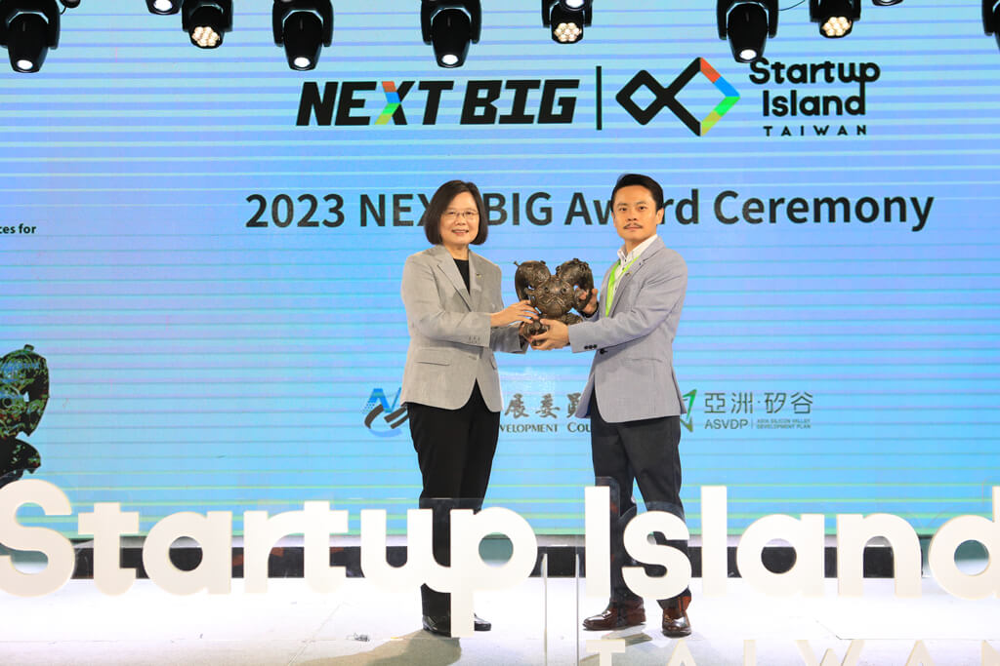

在臺灣的創業版圖中，有一塊領域始終被視為「高門檻」，法規密集、監理嚴格。
然而，東聯互動創辦人吳侑勳，卻選擇踏進這個新興產業，用九年時間證明，在監理與創新之間，只要找到市場利基，其實存在創造新市場的科技金融之路。
創業起點：從被忽略的市場，看見金融服務的斷層
2016 年，FinTech 在臺灣仍是陌生概念，那時候很少人談科技金融，創投也對跨境金流的新模式感到陌生。但吳侑勳敏銳意識到，有一群被金融體系忽略的族群，跨境勞動者正面臨著高額手續費、繁瑣流程、資訊不透明的痛點。
基於過去在電信產業的經驗，他看見一個核心問題：金融科技的進展，遠遠落後使用者的實際需求。因此吳侑勳思考，若能用手機、線上身分驗證與即時金流鏈結，把跨國匯款變得像傳訊息一樣簡單，是否能改變一整個產業？
於是東聯互動從一個「非主流市場」切入，2022 年取得金管會小額匯兌許可、2025 年完成上櫃，把身分審核（KYC）、洗錢防制（AML）與後端系統安全架構，整合為一站式行動金融體驗，讓跨境勞動者的高頻匯款需求，第一次有了以 App 為核心的普惠金融服務。
向監理學習：在臺灣做 FinTech，是一堂最扎實的創業課
跨境匯款不是一般的網路服務，它牽涉到跨境資金流向監控與即時風險模型等多重環節。這套架構不是一蹴可幾。創業初期，小額匯兌的數位化仍屬新興領域，制度與實務都在摸索與形塑之中。東聯互動先以美、英、日、韓與東南亞等國外成熟市場為參照，調整出合規流程與系統，再與主管機關反覆溝通，逐步調整流程與系統架構。「金融是相當敏感行業，監理單位要維護消費者權益與系統穩定；新創想推動便利與創新。過程不免有火花，但正是這種『高密度監理』的洗禮，訓練了我們的細膩度與韌性。」
這段過程漫長而艱難，從法規解讀、技術調整到反覆驗證，花了數年才終於取得執照，但也正因如此，東聯互動把「監理要求」淬鍊成公司最核心的競爭力。吳侑勳說：「如果能在臺灣通過監理，就有相當能力在全球市場通過考驗。」這句話不是口號，而是團隊一路走來的深刻體悟，並逐漸成為東聯互動內部的集體信念。臺灣的高強度監理，大幅提升企業面對國際市場時的合規遷移能力。
關鍵推手：政府資源讓創新從概念走向制度
東聯互動能走到今天，政府扮演了不可或缺的角色。在創業最脆弱、最不確定的階段，提供了「決定性」的支持。吳侑勳直言。
金融服務攸關人民財務安全，監理強度在所不免。但金管會在與東聯互動的多次往返過程中，逐項拆解 KYC、AML、金流監控流程，協助公司修正可能的風險點。這樣的「監理對話」，直接影響東聯互動後來的系統架構，不只是能用，而是能被金融端信任並持續拓展的服務。
在制度逐漸成形後，國發基金透過相關投資機制參與公司資本結構，不只是資金挹注，更提升市場與金融機構的信任基礎，讓東聯互動在與銀行洽談合作、建立公司治理制度、準備進入資本市場上，有了更穩固的基礎，成為少數走入公開市場的 FinTech 新創。
跨境匯款的市場不在臺灣，而在國際。因此經濟部提供了大量海外市場資訊，包括：各國金融監理制度、跨境金融服務需求、新南向與南亞金流場景、海外協作夥伴與法規差異資料庫等，讓東聯互動能在規劃出海時「看得更遠、走得更準」。

2023 年榮獲國發會 Next Big 殊榮，獲得蔡英文總統頒獎。從臺灣走向世界：金融服務一定要全球化
取得執照後，東聯互動並沒有停下腳步。吳侑勳深知，金融服務若只在本地市場打轉終將碰到天花板，而跨境金流更是一個「跨國而生，目標全球」的行業。因此，他為公司未來三到五年的發展，規劃出清晰而關鍵的成長軸線。
臺灣市場雖成熟，但規模有限；相對地，跨境勞動人口大量湧現都正快速擁抱數位服務。這些市場的法規環境各不相同，也更具挑戰，但也因為金融服務尚未完全普及，反而成為臺灣科技金融得以發揮的巨大空間。
其次，是從「匯款產品」進化為跨境金融平臺。在吳侑勳的藍圖裡，跨境匯款只是切入點，是金融服務最前端的一哩路；真正的市場在後面。東聯互動已經開始規劃將服務延伸至跨境支付、小額保險、金融教育與信用建立等項目，而這些服務都能在公司多年打造的基礎架構上自然展開。
吳侑勳提出了一個極具前瞻性的觀點：臺灣金融要走向國際，不能只靠傳統金控，也要靠新創的速度。金控擁有資本實力、品牌信任與成熟的合規與科技體系；新創則以產品創新、敏捷試錯與場景整合見長。兩者若能協同前進，不但能互補彼此的限制，更可能打造出「下一代臺灣金融出口模式」，不是輸出單一產品，而是輸出一整套跨境金融服務能力。
「否定自我，超越期待」是吳侑勳勉勵自己的八個字。「現在很多人把新創當成一種 dress code；都嘗試創業，但創業過程到底有多長、多累、多不確定，很少有人真正瞭解。」創業不是舞臺，而是修煉；機會不是亮點，而是匯集大量看不見的苦工。每天比前一天進步一點點，正視挑戰，才能在挫折裡找到前進的方向。
創新創業往往從「現況還沒完備」的題目開始，東聯互動一路在監理框架中摸索出產品，並在政府資源陪跑下走進資本市場。對吳侑勳來說，創業不只是寫出一款 App，而是和政策、監理、市場、消費者一起，讓創新和企業站在更大的地圖上。在金融科技產業中，資源固然重要，但真正決定企業高度的，是方向的選擇：用全球市場的視野、海外監理的適應、跨境合作的效率、以及把臺灣放進國際坐標的能力。